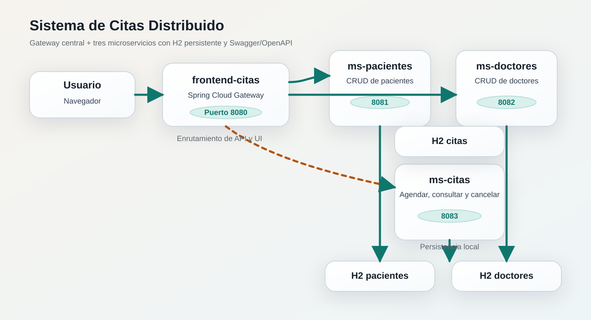
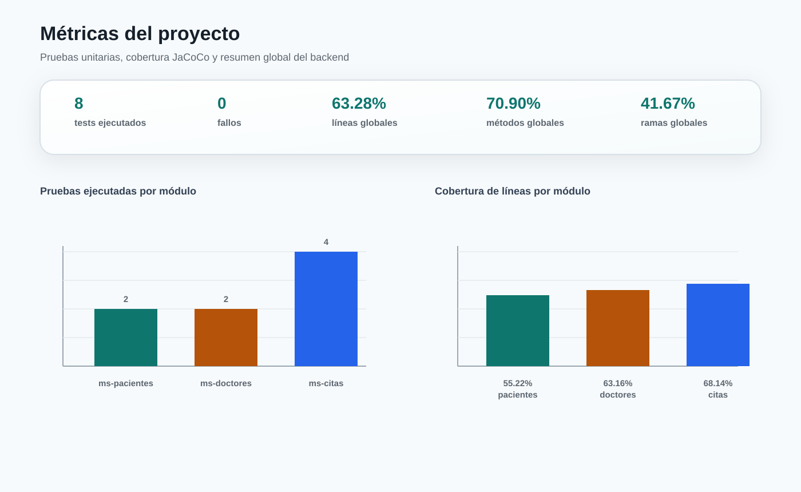

Informe general
Sistema de Citas Distribuido
Arquitectura de microservicios con Spring Boot, Spring Cloud Gateway, H2 en modo archivo, Swagger/OpenAPI, pruebas unitarias y cobertura JaCoCo.
3microservicios backend
6tests unitarios
63.28%cobertura de líneas
41.67%cobertura de ramas
Arquitectura
Componentes
- frontend-citas: gateway y frontend estático.
- ms-pacientes: gestión de pacientes.
- ms-doctores: gestión de doctores.
- ms-citas: gestión de citas, disponibilidad y cancelación.
Persistencia
H2 en modo archivo
- Pacientes:
jdbc:h2:file:./data/pacientesdb - Doctores:
jdbc:h2:file:./data/doctoresdb - Citas:
jdbc:h2:file:./data/citasdb
La configuración se apoya en volúmenes Docker para conservar los datos entre reinicios.
Diagrama de arquitectura

Documentación API y pruebas
Swagger/OpenAPI
Cada backend expone Swagger UI para validar y probar endpoints sin necesidad de Postman.
Pruebas unitarias
Se ejecutaron pruebas con JUnit 5 y Mockito en la capa de servicio. Los resultados fueron 2, 2 y 4 tests para pacientes, doctores y citas respectivamente, sin fallos.
Métricas de cobertura

| Módulo | Líneas | Instrucciones | Métodos | Clases | Ramas |
|---|---|---|---|---|---|
| ms-pacientes | 55.22% | 53.66% | 63.89% | 42.86% | 0.00% |
| ms-doctores | 63.16% | 61.79% | 73.81% | 42.86% | 0.00% |
| ms-citas | 68.14% | 67.76% | 73.21% | 55.56% | 62.50% |
Resultados de pruebas
| Módulo | Tests | Fallos | Errores | Omitidos |
|---|---|---|---|---|
| ms-pacientes | 2 | 0 | 0 | 0 |
| ms-doctores | 2 | 0 | 0 | 0 |
| ms-citas | 4 | 0 | 0 | 0 |